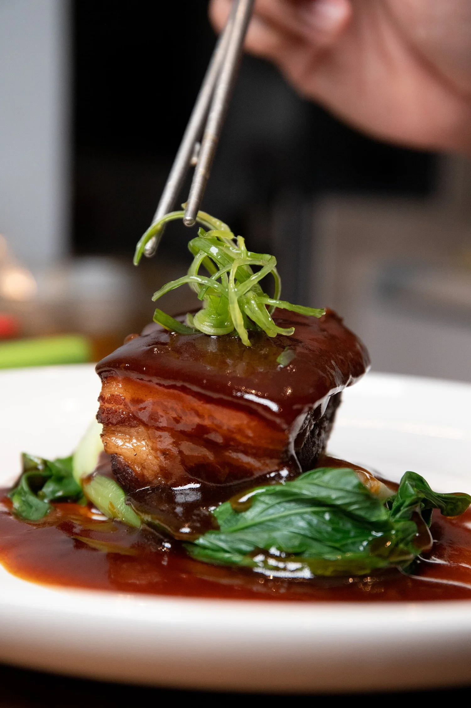

招牌推介
- $198
薑蔥鮮龍蝦
每隻約700至800克；加配麵條$15。
- $168
昆士蘭甲級鮮泥蟹
每隻約900克至1公斤。推介星洲口味；加配炸饅頭6件$12。
湯羹
- $14
酸辣湯
四川酸辣湯，配鮮蝦、肉絲及豆腐。
- $12
雞蓉粟米羹
- $16
蟹肉粟米羹
- $15
鮮蝦雲吞湯
- $16
海鮮豆腐羹
前菜
- $16
自家製春卷（4件）
豬肉及什錦蔬菜，配甜辣醬。
- $16
素春卷（4件）
什錦中式蔬菜，配甜辣醬。
- $18
鮮蝦春卷（5件）
- $18
芝麻蝦多士（4件）
芝麻鮮蝦脆多士，配沙律醬。
- $17
五香鵪鶉（1隻，切2件）
- $20
沙嗲雞串（4串）
雞胸肉、花生及沙嗲醬，配菠蘿和青瓜。
- $16
咖喱角（3件）
豬肉及蔬菜咖喱餡酥皮角。
- $22
香脆大生蠔（4隻）
塔斯曼尼亞生蠔裹漿炸香，配香辣椒鹽。
- $24
蒜蓉蒸帶子（3隻）
澳洲帶子連殼配粉絲蒸製。
- $20
雞肉生菜包（4件）
鑊炒餡料以生菜葉包裹。
- $22
鴨肉生菜包（4件）
鑊炒餡料以生菜葉包裹。
- $25
海鮮生菜包（4件）
鑊炒餡料以生菜葉包裹。
餃子點心
- $25
點心拼盤（6件）
鮮蝦餃、燒賣及小籠包。
- $20
龍軒燒賣（5件）
蒸點心配鮮蝦及魚子。
- $21
小籠包（6件）
內有湯汁的蒸豬肉小籠包，另配醋。
- $19
鮮蝦餃（4件）
- $19
紅油抄手（5件）
蒸豬肉雲吞，配香辣醋汁。
- $18
蒸素餃（5件）
- $19
香煎豬肉韭菜餃（5件）
- $19
香煎雞肉餃（5件）
北京烤鴨
- $58
北京烤鴨兩吃 · 半隻
先享北京烤鴨薄餅6張，再選鴨肉生菜包（4件）、燒鴨、鴨肉炒飯或炒麵，或炒鴨肉。額外生菜包每件$3。
- $86
北京烤鴨兩吃 · 全隻
先享北京烤鴨薄餅12張，再選鴨肉生菜包（8件）、燒鴨、鴨肉炒飯或炒麵，或炒鴨肉。額外生菜包每件$3。
鮮活海鮮 · 市價
- 市價
龍蝦
可選刺身、上湯焗、避風塘、蒜香牛油、黃金香辣或椒鹽做法。
- 市價
東星斑
可選薑蔥蒸、荷蘭豆炒、椒鹽或避風塘做法。
- 市價
鮑魚
可選清蒸、白灼或XO醬炒。
- 市價
泥蟹
可選薑蔥、星洲、椒鹽、避風塘、黑椒牛油、鹹蛋黃、鹹蛋黃粉絲、花雕酒蛋白蒸，或鵝肝炒（另收費）。
- 市價
皇帝蟹
可選薑蔥、星洲、椒鹽、避風塘、黑椒牛油、鹹蛋黃、鹹蛋黃粉絲、花雕酒蛋白蒸，或鵝肝炒（另收費）。
- 市價
雪蟹
可選薑蔥、星洲、椒鹽、避風塘、黑椒牛油、鹹蛋黃、鹹蛋黃粉絲、花雕酒蛋白蒸，或鵝肝炒（另收費）。
煲仔與鐵板
- $43
鐵板黑椒牛肉
牛柳粒配蘑菇及黑椒汁，以鐵板奉上。
- $39
鐵板蒙古羊肉
- $31
鐵板黑椒雞
- $43
鐵板蒜香或黑椒大蝦
- 市價
砂鍋活泥蟹（900克）
配粉絲、XO醬及鹹蛋黃。
- $33
砂鍋台式三杯雞
雞腿肉以醬油、紹興酒、薑、蒜及九層塔烹調。
- $48
砂鍋XO醬粉絲大蝦
原殼大蝦配XO醬。
- $32
砂鍋鹹魚茄子煲
配雞肉碎、乾辣椒及香料。
- $37
砂鍋紅燒牛腩
牛腩以特製醬汁慢燴。
海鮮
- $46
至尊海鮮小炒
鑊炒大蝦、帶子、魚、鮮魷、西蘭花及松子。
- $42
果仁大蝦
大蝦配烤夏威夷果仁及西蘭花。
- $43
XO醬帶子炒大蝦
大蝦、澳洲帶子及豆角配XO醬。
- $48
小炒帶子
澳洲帶子配荷蘭豆。
- $48
蒜蓉蒸帶子（6隻）
澳洲帶子連殼配粉絲。
- $38
清蒸魚柳
紐西蘭深海魚柳，可選薑蔥或豉汁。
- $42
蜜汁大蝦
- $42
椒鹽大蝦
- $34
椒鹽鮮魷
- $32
黃金椒鹽白飯魚
雞鴨
- $41
荔枝鴨
半隻慢烤鴨，配荔枝及梅子醬。
- $40
慢烤鴨
半隻鴨醃製後以烤爐烤製。
- $32
脆皮雞
半隻雞配山東醋汁。
- $30
宮保雞丁
雞胸肉配豆瓣醬、乾辣椒、洋蔥、甜椒及花生。
- $30
蜜汁或檸檬雞
- $30
咖喱或沙嗲雞
- $30
咕嚕雞
- $33
棒棒雞
炸雞配乾辣椒、四川香料及辣油。
肉類
- $59
蜜椒和牛
極品MB9+和牛配荷蘭豆及蘑菇。
- $33
京式牛柳絲
香脆牛柳絲配中式醬汁。
- $42
茶香炒牛柳
- $43
京式牛柳
牛柳及洋蔥配京式醬汁。
- $31
豉椒牛肉
- $30
咕嚕肉
- $35
蒜香排骨
- $35
蜜汁燒肉
排骨與菠蘿配酸甜醬汁。
- $38
孜然羊肉
- $31
芙蓉雜錦蛋
叉燒、雞肉、洋蔥及雞蛋配芡汁。
- $38
蔥爆羊肉
中式珍饈
- $34
川味五花肉
配甜椒、洋蔥、青椒、韭蔥、木耳、青蔥、辣椒及蘑菇。
- $36
梅菜扣肉
- $58
走地雞火鍋
半隻帶骨雞以滷水煮製，配蔬菜。
- $43
清蒸走地雞（半隻）
- $128起
紅燒塔斯曼尼亞原隻鮑魚
每隻以特製蠔油汁烹調。
- $59
烤乳鴿
每隻切六件；需預訂。
- $43
香辣炒肥腸
- $58
水煮魚片
蔬菜與豆腐
- $28
麻婆豆腐
雞肉碎、洋蔥及辣椒醬。
- $32
黃金鹹蛋黃脆豆腐
- $29
紅燒豆腐
配時令蔬菜、蘑菇、薑及青蔥。
- $26
椒鹽豆腐
- $29
乾煸四季豆
四季豆配雞肉碎及洋蔥。
- $26
清炒時蔬
時令中式蔬菜配蒜蓉。
- $26
蠔油時蔬
可選芥蘭、菜心、白菜或什錦蔬菜。
- $26
避風塘脆茄子
飯與麵
- $24
揚州炒飯
叉燒、鮮蝦及雞蛋。
- $23
雞粒炒飯
雞胸肉、生菜及雞蛋。
- $24
鴨肉炒飯
燒鴨、菠蘿及雞蛋。
- $36
瑤柱帶子炒飯
瑤柱、本地帶子及蛋白。
- $23
松露素菜炒飯
雞蛋及什錦蔬菜。
- $35
海鮮炒麵
大蝦、魚、鮮魷、帶子及蔬菜配脆麵。
- $26
雞肉炒麵
雞胸肉及蔬菜配脆麵。
- $30
什錦炒麵
雞肉、牛肉、叉燒及蔬菜配脆麵。
- $27
星洲炒米
叉燒、鮮蝦、洋蔥、米粉、咖喱粉、甜椒、青蔥及芝麻。
- $26
牛肉炒河粉
牛肉、洋蔥、芽菜及青蔥配河粉。
- $4.50
茉莉香米飯
價格均為澳元。鮮活海鮮按市價計算。菜式可能含有堅果或貝類；如有飲食需要，請告知職員。公眾假期加收15%。
歡迎光臨